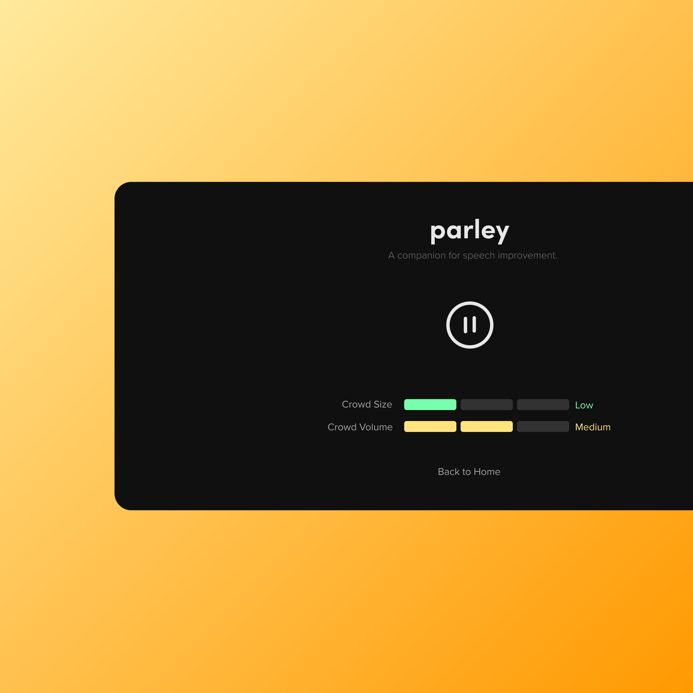

Virtual Reality
A world like your own.
Virtual Reality is a simulated experience in a virtual environment that is interactive and can be explored by the user. It provides the user with a safe and no-risk environment and practice and improve in realistic scenarios. It allows the user to expereince different scenarios remotely, as per the user's convenience. Altogether, it also inspires a fun and intuitive way to develop speaking skills as virtual reality in itself is pretty interesting and engaging.
Noise & Crowd Control
Deafening or Silent. Your choice.
Different types of audiences and their behaviour has the capacity to dictate the outcome of various speeches. Hence, we provide our users with the option to switch between variabe crowd sizes and crowd volumes. The option to switch between different settings is provided in the pause menu where the user can switch choose from low, medium and high for either of the variables. This allows the user to test themselves in a variety of conditions and situations and provides a more complete learning experience.


Real-time Feedback
Practice. Comprehend. Learn. Repeat.
Parléy provides the user with real-time feedback during their sessions. The feedback consists of important metrics like "Words per Minute" which determines the pace of the speech, "sentiment analysis" which provides insights into the tone of the speech. Both these metrics are depicted using odometers for easy understanding without much disturbance. It also recognizes the number of times you say cuss words in your speech and displays them at the bottom of the screen to indicate the user.